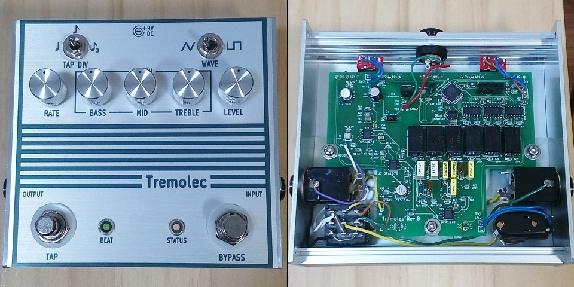
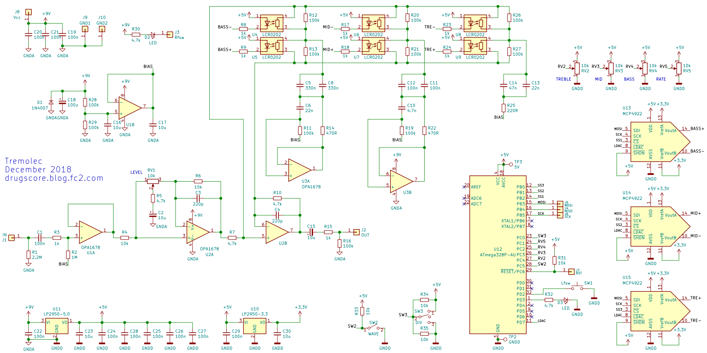

Tremolec
2019年06月02日 カテゴリー：自作エフェクター（アナログ）

東京エフェクター「第6回エフェクタービルダーズ・コンテスト」に向けて製作した、トレモロを周波数帯域別にかけるというエフェクターです。全てデジタル信号処理でやる方が楽だと思いますが、製作時は知識が足りずアナログ回路＋マイコン制御の練習として取り組みました。タップテンポ付きで、LFO周期に合わせて左側のLEDが点滅します。名前の由来は、トレモロとイコライザ（Tremolo + EQ）を合わせたものです。
筐体は少し変わった形にしたかったので、タカチのHEN110312Sというケースです。上下側が放熱用の形状なので、DCジャックの穴を開けるのが大変でした。ラベルデザインはKiCadでやってみましたが、フォントを取り込むのは面倒なので標準フォントをそのまま使っています。
▽回路図

一般的なグラフィックイコライザ回路の可変抵抗部分をフォトカプラLCR0202で置き換えたものとなります。DAコンバータMCP4922から出力される電圧によりフォトカプラのLEDの明るさを制御し、抵抗値を変えるという仕組みです。LFO周期の半分で増幅側のフォトカプラだけを動かし、もう半分で減衰側を動かすという動作となっています。電圧変化が直線的だと音量変化がスムーズでなかったため、独自にデータを取って電圧変化を指数カーブに修正しました。また、フォトカプラの特性はバラつきがあるので、増幅と減衰の幅が同じくらいになるようマッチングしました。
AVRマイコンATmega328Pは内部クロック8MHzで動作させています。ポットやスイッチの読取（ADコンバータ）、LFO（DAコンバータ制御）、タップテンポといった機能を担っています。
▽レイアウトについて（KiCadデータはGitHubへ）
隙間が多いので表面実装でなくてもよかったかもしれません。一応アナログGNDとデジタルGNDを分けるようにしました。デジタルのノイズは測定限界以下で問題ないようです。C7、C9は何も入れておらず、後からコンデンサの値を調節できるように設けた部分になります。
▽Arduinoスケッチ
#include <SPI.h>
// ピン設定 実際は高速処理するため該当レジスタを直接変更
const byte swPin = 2; // タップスイッチ
const byte ledPin = 3; // PD3 周期表示用LED
const byte SS1 = 10; // PB2 MCP4922 Low
const byte SS2 = 9; // PB1 MCP4922 Mid
const byte SS3 = 8; // PB0 MCP4922 Treble
const byte LDAC = 7; // PD7 MCP4922 電圧出力作動ピン
// LFO1周期を500分割 0.002周期経過するごとに電圧値を変更する
volatile int pwmCount = 0; // LFO用カウンタ 0〜499
volatile int waveCount = 0; // 波形用カウンタ 0～125
volatile unsigned long timeCount = 0; // タップ時間取得用カウンタ
unsigned long tapTime = 0; // タップ間隔時間 us
unsigned long timeTemp = 0; // タップ間隔時間一時保存用
unsigned long swCount = 0; // タップスイッチ用カウンタ
byte adcNum = 0; // ADC番号（配列の添字）Bass0 Mid1 Tre2 Wave3 Div4 Rate5
const byte adcPinArray[6] = {16, 17, 18, 19, 14, 15}; // ADCピン設定
unsigned int oldAdcValue[6] = {2000, 2001, 2002, 2003, 2004, 2005}; // 旧ADC値
unsigned int newAdcValue[6] = {1110, 1111, 1112, 1113, 1114, 1115}; // 新ADC値
unsigned int dacArray[626]; // 電圧値配列 626段階 セットアップ時計算
unsigned long dacDepth[3] = {0, 1, 2}; // 電圧値配列添字部分の倍率
volatile unsigned int dacValueA[3] = {4001, 4002, 4003}; // 出力電圧値 増幅側
volatile unsigned int dacValueB[3] = {4011, 4012, 4013}; // 出力電圧値 減衰側
byte waveAmp = 1; // 三角波→矩形波変換 増幅率
const byte SQ = 12; // 上記増幅率設定値
byte tapDiv = 1; // タップ時間分割値
//const float rateAdj = 1.000; // 周期補正 実測して設定→不要
const unsigned int ledOnTime = 40000; // 周期表示LED点灯時間設定値 us
unsigned int ledOffCount = 250; // 上記LEDが消灯するカウンタ値
void setup() {
TIMSK0 = 0; // Timer0割り込み停止 安定動作のため割り込みはTimer1のみ
// 電圧値の配列を計算 指数カーブ
for (int i = 0; i <= 625; i++) {
dacArray[i] = 4141 - 46 * exp(0.0072 * i);
}
pinMode(swPin, INPUT_PULLUP);
pinMode(ledPin, OUTPUT);
pinMode(SS1, OUTPUT);
pinMode(SS2, OUTPUT);
pinMode(SS3, OUTPUT);
pinMode(LDAC, OUTPUT);
SPI.begin();
SPI.beginTransaction(SPISettings(8000000, MSBFIRST, SPI_MODE0)); // SPI 8MHz
// Timer1 電圧値変更間隔時間管理・タップ時間計測
TCCR1A = 0b00000000; // Timer1 CTCモード
TCCR1B = 0b00001010; // Timer1 CTCモード クロック8分周
OCR1A = 100; // Timer1 比較Aの値 = 割り込み間隔 us
TIMSK1 |= (1 << OCIE1A); // Timer1 比較A割り込み許可
}
// LFO（Timer1 比較A割り込み）-----------------------------------------------------
ISR(TIMER1_COMPA_vect) {
timeCount++; // タップ時間取得用カウンタ
PORTD &= ~_BV(7); // LDAC LOW (最初に電圧出力)
PORTD |= _BV(7); // LDAC HIGH
if (pwmCount == 500) pwmCount = 0; // 0〜499 ループ
if (pwmCount <= 125) { // 三角波 増幅側上昇
waveCount = waveAmp * pwmCount; // 三角波を増幅後、
waveCount = min(waveCount, 125); // クリップし矩形波とする
dacA(waveCount);
} else if (pwmCount <= 250) { // 三角波 増幅側下降
waveCount = waveAmp * (250 - pwmCount);
waveCount = min(waveCount, 125);
dacA(waveCount);
} else if (pwmCount <= 375) { // 三角波 減衰側上昇
waveCount = waveAmp * (pwmCount - 250);
waveCount = min(waveCount, 125);
dacB(waveCount);
} else { // 三角波 減衰側下降
waveCount = waveAmp * (500 - pwmCount);
waveCount = min(waveCount, 125);
dacB(waveCount);
}
if (pwmCount == 125) PORTD |= _BV(3); // 周期表示LED点灯
if (pwmCount == ledOffCount) PORTD &= ~_BV(3); // 消灯
pwmCount++;
}
void loop() {
// タップテンポ -----------------------------------------------------------------
if (digitalRead(swPin) == LOW) {
swCount++;
if (swCount == 50) { // チャタリング対策 数msスイッチ押下で検出
// 前回スイッチ検出から経過した時間を記録
tapTime = timeTemp + timeCount * OCR1A + TCNT1;
TCNT1 = 0; // 経過時間をリセット
timeTemp = 0;
timeCount = 0;
pwmCount = 124; // 増幅最大の点にリセット
if ( 200000 < tapTime && tapTime < 2100000) { // 周期制限 0.2秒～2.1秒
// タップ間隔を電圧値変更間隔時間へ換算（Divスイッチ加味）
OCR1A = tapTime * 0.002 / tapDiv;
// どの周期でも周期表示LEDの点灯時間が同程度になるよう計算
ledOffCount = 125 + ledOnTime / OCR1A;
}
}
}
else swCount = 0;
// ADC --------------------------------------------------------------------------
adcNum++;
if (adcNum == 6) adcNum = 0; // 0〜5 ループ
newAdcValue[adcNum] = analogRead(adcPinArray[adcNum]); // 読取値が4以上変化で変更
if (abs(newAdcValue[adcNum] - oldAdcValue[adcNum]) >= 4) {
if (adcNum <= 2) { // Depth 0〜640 160までは急な変化
if (newAdcValue[adcNum] < 100) dacDepth[adcNum] = 1.6 * newAdcValue[adcNum];
else dacDepth[adcNum] = 0.5201 * newAdcValue[adcNum] + 108;
} else if (adcNum == 3) { // Wave 1 or SQ 矩形波変換増幅率
if (newAdcValue[adcNum] < 500) waveAmp = 1;
else waveAmp = SQ;
} else if (adcNum == 4) { // Div 1〜3 タップ時間分割値
tapDiv = 0.0029 * newAdcValue[adcNum] + 1;
} else if (adcNum == 5) { // Rate 4004〜133 電圧値変更間隔時間
// Rate変更前から経過した時間を記録
timeTemp = timeTemp + timeCount * OCR1A + TCNT1;
TCNT1 = 0; // 経過時間をリセット
timeCount = 0;
// Rate計算 指数カーブ
OCR1A = 73 * exp(0.0039 * (1023 - newAdcValue[adcNum])) + 60;
// どの周期でも周期表示LEDの点灯時間が同程度になるよう計算
ledOffCount = 125 + ledOnTime / OCR1A;
}
oldAdcValue[adcNum] = newAdcValue[adcNum];
}
}
// 電圧値設定 A：増幅側 B：減衰側--------------------------------------------------
void dacA(int w) { // w：waveCount 波形用カウンタ
// w(0〜125)にDepth(0〜640)をかけ128で割ったものが電圧値配列の添字(0〜625)
dacValueA[0] = dacArray[(dacDepth[0] * w) >> 7];
dacValueA[1] = dacArray[(dacDepth[1] * w) >> 7];
dacValueA[2] = dacArray[(dacDepth[2] * w) >> 7];
PORTB &= ~_BV(2); // SS1(PB2) LOW
SPI.transfer((dacValueA[0] >> 8) | 0x30); // 0x30=0b00110000 A出力 バッファなし
SPI.transfer(dacValueA[0] & 0xff); // ゲイン1倍 シャットダウンなし
PORTB |= _BV(2); // SS1(PB2) HIGH
PORTB &= ~_BV(1); // SS2(PB1)
SPI.transfer((dacValueA[1] >> 8) | 0x30);
SPI.transfer(dacValueA[1] & 0xff);
PORTB |= _BV(1);
PORTB &= ~_BV(0); // SS3(PB0)
SPI.transfer((dacValueA[2] >> 8) | 0x30);
SPI.transfer(dacValueA[2] & 0xff);
PORTB |= _BV(0);
}
void dacB(int w) {
dacValueB[0] = dacArray[(dacDepth[0] * w) >> 7];
dacValueB[1] = dacArray[(dacDepth[1] * w) >> 7];
dacValueB[2] = dacArray[(dacDepth[2] * w) >> 7];
PORTB &= ~_BV(2);
SPI.transfer((dacValueB[0] >> 8) | 0xb0); // 0xb0=0b10110000 B出力
SPI.transfer(dacValueB[0] & 0xff);
PORTB |= _BV(2);
PORTB &= ~_BV(1);
SPI.transfer((dacValueB[1] >> 8) | 0xb0);
SPI.transfer(dacValueB[1] & 0xff);
PORTB |= _BV(1);
PORTB &= ~_BV(0);
SPI.transfer((dacValueB[2] >> 8) | 0xb0);
SPI.transfer(dacValueB[2] & 0xff);
PORTB |= _BV(0);
}
きむ茶工房ガレージハウス - DAコンバータ MCP4922(SPI)を利用しD/A変換を行う
音については今までにない効果だと思うので、どう評価されるかわかりません。TREBLEのみ揺らす、MIDのみ揺らさない等、いろんなパターンを試せるので、誰でもきっと「お気に入りのトレモロ」が見つけられるんじゃないかと思います。
以下、採用にならなかった案をメモしておきます。
＜他のイコライザ回路＞
下記ページのような3バンドイコライザ回路があります。DJミキサーに使われているらしいです。
Equalisers, The Various Types And How They Work - 9 - Frequency 'Isolators'
シミュレーションしてみたのですが、減衰時の特性がいまいち気に入りませんでした。
＜デジタルポテンショメータ（以下DPOT）＞
フォトカプラの部分にDPOTを使うことを最初検討していました。しかし普通のDPOTは分解能が8ビットなので、1/256ずつ飛び飛びに値を動かすことになり、ノイズが発生してしまうことになります。常にDPOTを動かし続ける今回の用途には向いていないと判断しました。
＜フォトカプラのPWM制御＞
フォトカプラのLED側をPWMで制御しようと思い、PWM出力が6つ使えるマイコンATmega1284Pを準備しました。しかしPWMが一部8ビットなので、256段階でしか抵抗値を調節できず、スムーズに増幅・減衰の変化をさせることができませんでした。後から考えると、高性能な32ビットマイコンを使えばよかったかもしれません。